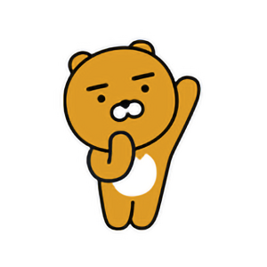

라이언(RYAN)은 카카오프렌즈에서 창작한 동물 캐릭터이다. 겉보기에는 얼핏 곰처럼 보이지만 사실은 갈기가 없는 사자이며 수컷이다. 2016년에 첫 등장을 하였으며 카카오프렌즈에서 신캐릭터 발표 당시 공개되었다.
2016년에 첫 등장을 하였으며 카카오프렌즈에서 신캐릭터 발표 당시 공개되었다. 머리에 갈기가 없고 곰처럼 둥글어보이는 얼굴 때문에 일부에서 곰으로 오해하기도 하지만 엄연한 숫사자이며 카카오프렌즈중에서도 인기가 높은 캐릭터이다.
몸 색깔은 주황빛을 띄있으며 사자의 입에 둥글게 보이는 얼굴이 특징이다. 유일하게 표정 변화가 없는 것이 특징으로 표정 대신 몸짓으로 표현한다. 카카오프렌즈는 물론 카카오에서도 상징적으로 존재하는 국민 캐릭터이기도 하다.